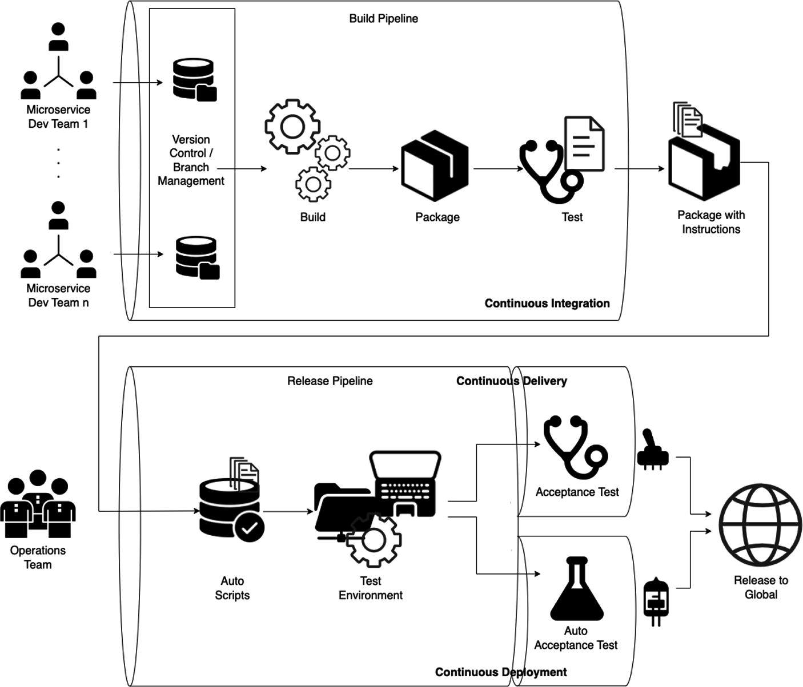

NBCRA 45, Christbin, Thiruvananthapuram, Kerala, India
When the number of microservices and the number of deployment environments increase, you have to deal with many YAML files. In the last chapter, you learned that Helm is a handy tool that maintains a single deployment YAML file with version information. This file lets you set up and manage very large Kubernetes clusters with a few commands.
Another problem with a large number of microservices is that you can have as many teams building code as you have microservices, if you need true parallelism to improve release speed. An app is an aggregate of many microservices, and code changes must be regularly built, tested, and merged to a shared repository. You may have a single repository or multiple repositories for an app, such as a separate repository for each microservice. When there are many branches in a single repository, this can lead to merge conflicts in the build cycles. If there are multiple repositories, there could be conflicts during the integration process. Regardless of the repository strategy, there must be a process to minimize such conflicts and enable a continuous, frictionless release. CI (Continuous Integration) and CD (Continuous Deployment) are intended to minimize these issues.
This chapter covers the following concepts:
Introduction to CI and CD
Example demonstrating a simple CI/CD pipeline
CI and CD
The motivations for modern day software release automation and several standard DevOps practices—such as automated build and test, Continuous Integration (CI), and Continuous Delivery (CD)—originated in the Agile world of software engineering.
DevOps
DevOps is a methodology from the software development industry. Used as a set of practices and tools, DevOps is intended to integrate and automate the work of software development (Dev) and IT operations (Ops) as a means for improving and shortening the software development lifecycle. Microservices-based architecture is intended to increase delivery speed, and to enable releases of parts of an app independent of other parts. Microservices are smaller in size, which allows the architecture of an individual service to emerge through continuous refactoring. Shared repositories and artefacts, which are version controlled, are the essence of DevOps practices, and the roles of Dev and Ops personnel are converging into a single pipeline of stages. Each stage identifies the discrete steps of the Dev and Ops processes with a blurred boundary between the Dev and Ops. If you look at the typical stages in a release process, these concepts will become clearer. See Figure 13-1.

A flow diagram has the following flow, microservice dev team 1 to n, version control or branch management, build, package, and test under build pipeline and continuous integration, package with instructions, operations team, auto scripts, test environment, and acceptance and auto acceptance test under release pipeline and continuous delivery and deployment, and release to global.
Figure 13-1
CI and CD
CI/CD stands for Continuous Integration and Continuous Delivery (or Continuous Deployment). This chapter investigates each component.
Continuous Integration (CI)
Continuous Integration defines how developers integrate code using a shared repository, multiple times a day with the help of automation. New code changes are regularly built, tested, and merged to a shared repository.
Continuous Delivery (CD)
Continuous Delivery is about automatically releasing software to the test or production environment. Continuous Delivery usually means a developer’s changes to an app are automatically bug tested and uploaded to a repository (like GitHub or a container registry like Docker Hub), where they can then be deployed to a live production environment by the operations team.
Continuous Deployment (CD)
Continuous Deployment is about releasing software to production automatically, without human intervention. It addresses the problem of overloading operations teams with manual processes of testing and pushing buttons, which slow down app delivery. Continuous Deployment builds over the benefits of Continuous Delivery by automating the next stage in the pipeline, as shown in Figure 13-1.
The following section investigates these aspects in the context of a tool, Skaffold.
Google Skaffold
Skaffold is an open-source command-line tool that facilitates developer productivity by orchestrating Continuous Development, Continuous Integration (CI), and Continuous Delivery (CD). It handles the workflow for building, pushing, and deploying your application and you can use it to easily configure a local development workspace. Due to how easy it is to set up, this chapter uses Skaffold to show a few of the aspects of CI/CD in the microservice example.
Skaffold Workflow
Skaffold provides a single, simple command that will simplify your development workflow by organizing common development stages. Here’s a typical workflow when you execute the Skaffold devcommand:
Collects and watches your source code for changes.
Syncs files directly to pods if the user marks them as able to be synced.
Builds artifacts from the source.
Tests the built artifacts using container-structure-tests or custom scripts.
Tags the artifacts.
Pushes the artifacts.
Deploys the artifacts.
Monitors the deployed artifacts.
Cleans up the deployed artifacts on exit (Ctrl+C).
Skaffold is flexible so that if you are coding on a local machine, you can configure it to build artifacts with your local Docker daemon and deploy them to Minikube using kubectl, which is what you will do next in the example. In production, you can switch to your production profile and start building with different profiles and then deploy with Helm.
CI and CD Example for Microservices
You will use Skaffold to enable CI/CD to the example in the previous chapter. This example assumes that Skaffold is already installed in your machine. On the Mac, you can install it using brew:
brew skaffold
This section starts by investigating the project structure.
Code Organization
The source code for this book is available on GitHub via the book’s product page, located at www.apress.com/9798868805547. The source code for this example is organized as shown in Listing 13-1, inside the ch13\ch13-01 folder.
./ch13-01/
├── README.txt
├── build.sh
├── clean.sh
├── k8s
│ ├── deployment.yml
│ └── service.yml
├── make.sh
├── pom.xml
├── run.sh
├── skaffold.yaml
└── src
└── main
├── java
│ └── com
│ └── acme
│ └── ecom
│ └── product
│ └── Application.java
└── resources
├── application.yml
└── log4j2-spring.xml
9 directories, 12 files
binildass-MacBook-Pro:ch13 binil$
Listing 13-1
Spring Boot Microservices Source Code Organization
Since you are using Google jib-maven-plugin to automate the Docker image creation, Docker daemon does not have to be running on your local machine, nor do you need a Docker file for your Spring Boot application.
Understanding the Source Code
The single application component is the Application.java class, which is a REST controller. You saw this code in the third example in Chapter 12, and there are more configurations to the jib plugin, so the Maven configurations are shown in Listing 13-2.
<project>
...
<build>
<plugins>
<plugin>
<groupId>com.google.cloud.tools</groupId>
<artifactId>jib-maven-plugin</artifactId>
<version>3.3.2</version>
<configuration>
<to>
<image>
binildas/${project.artifactId}
</image>
</to>
<container>
<creationTime>
USE_CURRENT_TIMESTAMP
</creationTime>
<ports>
<port>8080</port>
</ports>
</container>
</configuration>
</plugin>
</plugins>
</build>
</project>
Listing 13-2
Maven pom.xml (ch13/ch13-01/pom.xml)
You are mainly configuring the container port in Listing 13-2.
This example also looks at the application source code. The single application component is the Application.java class, which is a REST controller (see Listing 13-3).
An appVersion field is introduced in the Java class file in Listing 13-3. You will make changes to this field to understand the Skaffold CI/CD feature.
Next, take a look at the Skaffold descriptor, as shown in Listing 13-4.
apiVersion: skaffold/v1beta4
kind: Config
build:
local:
push: false
artifacts:
- image: binildas/spring-boot-docker-k8s-helm
# jibGradle: {}
jibMaven: {}
deploy:
kubectl:
manifests:
- k8s/*.yml
Listing 13-4
Skaffold Descriptor (ch13/ch13-01/skaffold.yaml)
A few of the descriptor fields are explained here:
build.local.push: False enforces Skaffold to use jibDockerBuild.
build.artifacts is a list of images you’re going to build.
build.artifacts.jibMaven configures Skaffold to use jib during the image-building phase, with type maven, since you are using Maven as a build tool.
deploy.kubectl.manifests sets the folder name where you have the Kubernetes manifest files. If you skip this attribute, the default directory name would be k8s.
You are almost done setting up a CI/CD pipeline in this Dev environment.
Build and Run the Microservice
The ch13\ch13-01 folder contains the Maven scripts required to build and run the examples. You will build using the mvn clean compile jib:buildcommand, as shown in Listing 13-5.
This build will push the image to Docker Hub. When you execute the dev mode of the Skaffold, it will build the application, create the image, deploy in your local cluster, and keep watching your sources to see if there is a change. When there is a change, it will repeat the same flow upon code change so that you have a fresh deployment for testing and debugging.
Before you trigger any changes to the code, first run the microservice as the next step. Note that you are going to use the skaffoldcommand to run the microservices. See Listing 13-6.
[springboothelm] 2023-06-01 12:55:42 INFO StartupInfoLogger.logStarted:57 - Started Application ...
[springboothelm] 2023-06-01 12:55:42 INFO Application.main:51 - Started...
...
[springboothelm] 2023-06-01 12:59:50 INFO Application.home:41 - Start
[springboothelm] 2023-06-01 12:59:50 DEBUG Application.home:43 - Inside hello.Application.home() : Counted 1 times by App Version: 1
[springboothelm] 2023-06-01 12:59:50 INFO Application.home:44 - Returning...
...
Listing 13-9
Microservice Terminal Window Logs
You will now make some changes to the source code of the project. While making the change, keep watching the terminal window. Make this change (see Listing 13-10):
[springboothelm] 2023-06-01 13:01:23 INFO Application.main:51 - Started...
Listing 13-10
Microservice Terminal Window Logs on Redeployment
Any small change will be picked up and Skaffold and will automatically trigger a new build of the Docker image, create a new pod, and redeploy the application.
You can test the application again using cURL, as in Listing 13-11.
[springboothelm] 2023-06-01 13:01:23 INFO Application.main:51 - Started...
[springboothelm] 2023-06-01 13:04:58 INFO Application.home:41 - Start
[springboothelm] 2023-06-01 13:04:58 DEBUG Application.home:43 - Inside hello.Application.home() : Counted 1 times by App Version: 2
[springboothelm] 2023-06-01 13:04:58 INFO Application.home:44 - Returning...
Listing 13-12
Microservice Terminal Window Logs After Redeployment
You can clearly view the change you have made in the source code (appVersion = "2"). Even the private static volatile long times = 0L counter has been reset since the class binaries have been reloaded by the new container. See Listing 13-13.
You can stop the application by typing Ctrl+C in the terminal window.
This completes the simple CI/CD pipeline example for microservices.
Summary
Faster release cycles are one of the major promises of microservices architectures. However, without a good CI/CD process, you won’t achieve the agility that microservices promise.
“We try to create teams that are no larger than can be fed by two pizzas. We call that the two-pizza team rule.”
—Bezos
When this becomes the norm, it is more important to have a strong CI/CD process, since you will have multiple teams working in their own separate repositories of microservices. You have seen an example demonstrating these concepts. Although the example and pipeline are simple, they served the purpose of introducing the concepts. Having looked at different aspects of microservices and containers, you are now ready to get into the public cloud, which you will do in the next chapter.